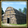

- 游戏中的战争税并不是一种税收，而是一种战时节支手段，详见经济#战争税。
税收（Tax），与生产和贸易并列为欧陆风云4的三大收入来源。每个省份都有基础税收和税收效率，省份的税收公式见下。除省份税收之外，还有另外的国家税收，故：
[math]\displaystyle{ \text{税收} = \text{省份税收} + \text{国家税收} }[/math]
 省份税收
省份税收
省份的月度税收公式为：
[math]\displaystyle{ \text{省份税收} = \frac{\text{基础税收}+\text{本地税收}}{12} \cdot \text{税收效率} \cdot (1 - \text{本地自治度}) }[/math]
其中税收效率同时计算如建筑和异文化惩罚之类的本地修正，  财务总管顾问这样的全国修正。之后再将其结果与
财务总管顾问这样的全国修正。之后再将其结果与  自治度乘算，所以100%的自治度会将该省份的税收降为0%。
自治度乘算，所以100%的自治度会将该省份的税收降为0%。
基础税收和本地税收
 基础税收是
基础税收是  发展度的三要素之一，在游戏中负责衡量当地的人口数量和富裕程度。1.28 版本以前未启用了DLC
发展度的三要素之一，在游戏中负责衡量当地的人口数量和富裕程度。1.28 版本以前未启用了DLC  常识的玩家不可以花费
常识的玩家不可以花费  行政点数手动提升发展度。许多事件和决议也会提升省份的基础税收。
行政点数手动提升发展度。许多事件和决议也会提升省份的基础税收。
此外，每一点基础税收还会带来以下加成：
| −2% | 本地陆军招募时间 | |
| −1% | 本地伟大工程升级时间 | |
| −1% | 本地建造时间 | |
| +2% | 本地思潮传播 |
本地税收会固定加至基础税收之上。目前，土著建筑  长屋 （+1  税收）是唯一能增加本地税收的方式。
税收）是唯一能增加本地税收的方式。
税收效率
税收效率指的是政府在地方收税的效率。其比例同样也为加算，所以如果一个省份属于  寡头共和国 （+5%），且是其
寡头共和国 （+5%），且是其  核心（+75%）城市（+25%），当被敌舰
核心（+75%）城市（+25%），当被敌舰  封港（-75%）时，当前税收效率就为30%。
封港（-75%）时，当前税收效率就为30%。
本地修正
这些是单独对省份产生影响的修正。
| 累加条件 | |
|---|---|
| +75% | |
| +60% | |
| +50% |
|
| +40% | 教堂 |
| +25% |
|
| +15% | 产物为 |
| +10% |
|
| +2% | 每殖民地 等级（100单位定居者） |
| −10% | 每点负宗教容忍 |
| −15% | 同文化组未接纳文化 |
| −25% | |
| −33% | 非同文化组未接纳文化 |
| −50% | |
| −75% |
全国修正
这些是对所有省份产生影响的修正。
| 条件 | |
|---|---|
| +25.0% | 作为天朝，激活诏书 开展人口普查（持续10年） |
| +15.0% |
|
| +10.0% | |
| +5.0% | 每一点 |
| +0.5% | 每一点 |
| +0.2% | 作为伊斯兰国家时，每一点 教条主义 |
| −10.0% | 拥有君主特质贪婪 |
| −20.0% | 处于灾难 宫廷与外省 |
来自政府：
| 条件 | |
|---|---|
| +25% | 是 |
| −25% – +25% | 是神权国，奉献度从0-100的修正 |
| +15% | |
| +10% | |
| +5% | |
| −5% | |
| −10% | 任意邻国为 谢契拉达政府，并启用 接收逃亡农奴互动 |
来自阶层：
| 条件 | |
|---|---|
| +5% – +20% |
|
| −20% – +20% | 效果由 |
| −5% – 0% | |
| −15% – 0% | |
| −20% – 0% | |
| −10% – −2.5% |
|
| −25% | 正处于 贵族政变灾难 |
来自理念与政策
| 传统 | 理念 | 奖励/野心 | 政策 | |
|---|---|---|---|---|
| +20% | — |
|
— | — |
| +15% |
|
|
|
|
| +10% |
|
|
|
|
| +5% | — |
|
— | — |
许多不同的事件和、决议和任务回报会对本地或者国家税收效率有影响。
国家税收
国家税收是一种特殊的税收机制，这不会影响省份税收。他将直接叠加至你经过税收效率计算后的税收上，所以国家税收甚至无视国家修正。
与其他收入不同，事件中往往显示的年收入的值，如果你需要得知具体每月收入，通常需要将这个数值除12。
| 条件 | |
|---|---|
| +12.0 | 基础值 |
| +10.0 | 拥有 莫卧儿底万 政府改革，并同化所有东班图 文化组省份 |
| −6.0 | 是附庸国 |
| +3.0 | 自由市 |
| +2.0 | 神圣罗马帝国皇帝 从每个自由市获得的奖励 |
| +0.5 | 神圣罗马帝国皇帝在启用建立公捐税体系帝国改革后，从每个帝国成员中获得的奖励 |
| +0.5 | 神圣罗马帝国选帝侯们在启用分享权力帝国改革后，从每个帝国成员中获得的奖励 |